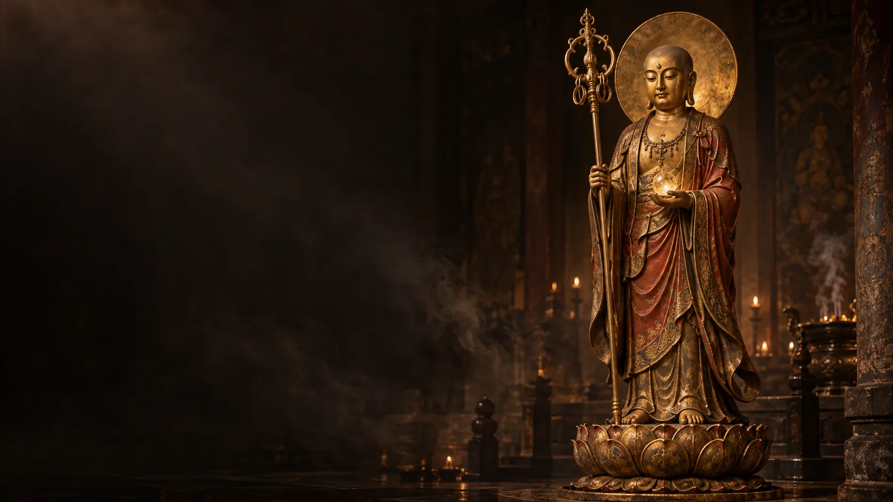

五十六篇感應與生活記錄向下尋讀 ↓
此刻的你 · READING PATHS
帶著一個問題，慢慢讀。
從生活的片刻，走進文字深處。

字裡行間 · THE COLLECTION
感應文集
五十六篇記錄，讀一段與此刻相應的文字。
暫時沒有符合的篇章。

緣起 · ABOUT THIS COLLECTION因文字相遇，
因文字相遇，
由此心出發。
這裡收錄作者提供的夢中感應、請示對話、白話翻譯與道友經歷。從修行的提問，到親情、失落與人間日常，留下一段段觀照自心的文字。
本文集以個人信仰與經驗紀錄的身分呈現，並非佛典原文或經過認證的菩薩言說。閱讀時，亦請尊重每個人因緣與處境的不同。
整理方式：保留來稿文字及既有白話，僅調整排版、增加分類與導讀。未附白話的篇章不另造譯文。三幅主視覺為 AI 生成的宗教藝術示意，非實際感應現場照片。